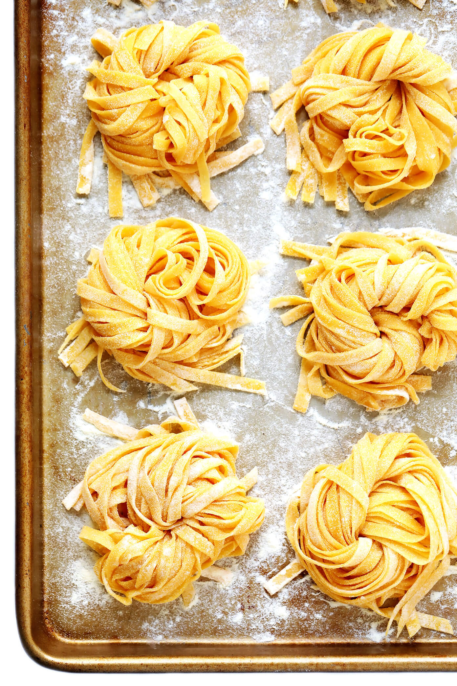

Homemade Pasta
Index

About the recipe
In adipisicing amet aliquip enim exercitation minim pariatur cillum nisi. Cillum sunt occaecat nostrud
excepteur exercitation nulla laboris pariatur dolor officia.Lorem aliqua voluptate minim elit reprehenderit id mollit.
Anim consequat excepteur aute officia minim ipsum proident consequat sunt reprehenderit dolore.
Ad esse ipsum laboris incididunt amet dolor dolor dolore amet ullamco. Cillum laborum officia do amet consectetur sit laborum mollit sit nisi aliqua dolor.
Ullamco culpa ea commodo labore pariatur do duis sint dolor nisi irure.
Ingredients
Steps
- 1 egg for every 100g flour. Use 00 if possible, all purpose if not. 4 eggs will feed a family of 4-6 depending on sauce and appetite.
- mix dough in a stand mixer or by hand. If by hand, make a well in the flour, add your eggs, and gradually combine the ingredients until it all sticks together and is well mixed.
- let it rest for about 15 minutes, so the gluten relaxes.
- roll out on a floured surface, to desired thickness. Cut with a knife.
- cook for 3-5 minutes in boiling water that has been salted to the point that it reminds you of the ocean (that doesn’t mean make it taste as salty as ocean water. I find a small handful of kosher salt for every 6 cups does the trick).